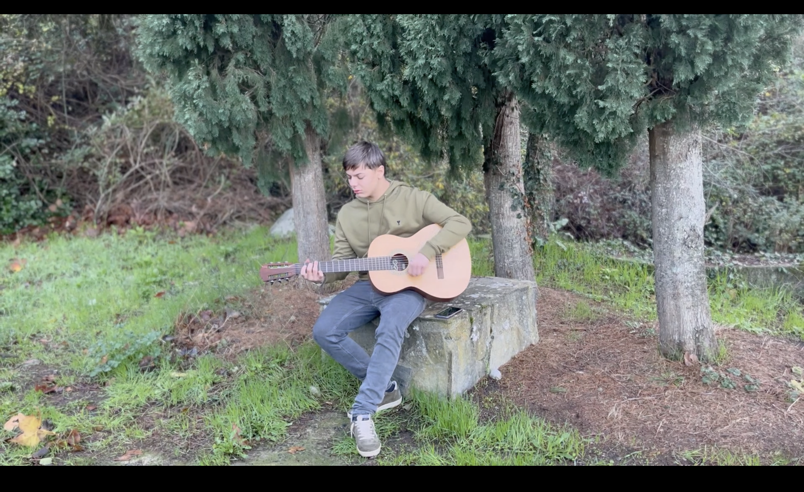

Dans ce projet, j’ai réalisé la communication audiovisuelle autour d’une interview, de la préparation au montage final. L’objectif était de produire un contenu clair, fluide et engageant, en mettant en valeur la personne interviewée et son message.